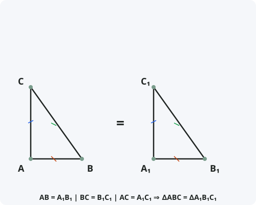

III признак равенства треугольников
Формулировка
Если три стороны одного треугольника соответственно равны трём сторонам другого треугольника, то такие треугольники равны.
Обозначения
Пусть даны два треугольника: ABC и A₁B₁C₁.
AB = A₁B₁ — первая пара равных сторон.
BC = B₁C₁ — вторая пара равных сторон.
AC = A₁C₁ — третья пара равных сторон.
Тогда: ∆ABC = ∆A₁B₁C₁

Доказательство
Теорема доказана.
Следствия из теоремы
- Из равенства треугольников следует равенство всех соответствующих углов: ∠A = ∠A₁, ∠B = ∠B₁, ∠C = ∠C₁.
- Треугольник — жёсткая фигура: если заданы три стороны, треугольник определяется однозначно (с точностью до движения).
- III признак не требует знания углов, только длин сторон.
- Этот признак часто используется в строительстве и машиностроении для обеспечения жёсткости конструкций.
Примеры применения
Пример 1. В треугольниках ABC и A₁B₁C₁: AB = A₁B₁ = 5 см, BC = B₁C₁ = 6 см, AC = A₁C₁ = 7 см. Докажите, что треугольники равны.
Решение: По III признаку равенства треугольников (три стороны равны) ∆ABC = ∆A₁B₁C₁.
Пример 2. Докажите, что треугольники ABD и ACD равны, если AB = AC и BD = CD (AD — общая сторона).
Решение: AB = AC, BD = CD, AD — общая. По III признаку ∆ABD = ∆ACD.
Пример 3. Можно ли утверждать, что два треугольника равны, если их периметры равны и равны две стороны?
Решение: Да, если периметры равны и две стороны равны, то и третьи стороны равны. По III признаку треугольники равны.
Историческая справка
III признак равенства треугольников был известен ещё в Древней Греции. Евклид в «Началах» (Книга I, Предложение 8) формулирует и доказывает этот признак.
Доказательство Евклида, приведённое выше (через равнобедренные треугольники), считается одним из самых изящных в «Началах». Интересно, что Евклид не использует метод наложения для III признака.
Свойство жёсткости треугольника, вытекающее из III признака, широко использовалось в древней архитектуре и строительстве.
Интересные факты
- III признак равенства треугольников часто обозначают аббревиатурой «ССС» (сторона-сторона-сторона) или «SSS» (Side-Side-Side).
- Треугольник — единственный многоугольник, который однозначно определяется длинами сторон (свойство жёсткости).
- В строительстве треугольные конструкции (фермы) используются именно из-за жёсткости, гарантированной III признаком.
- III признак не имеет аналога для четырёхугольников: зная четыре стороны, нельзя однозначно определить четырёхугольник.
- С помощью III признака можно доказать, что две окружности пересекаются не более чем в двух точках.